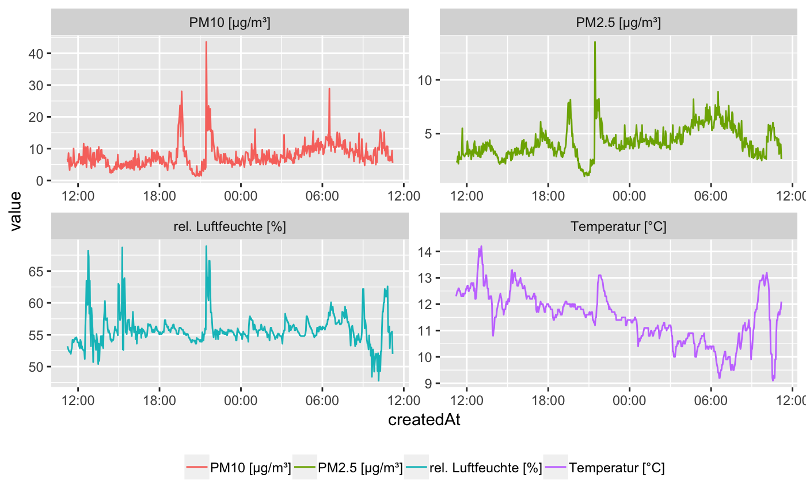
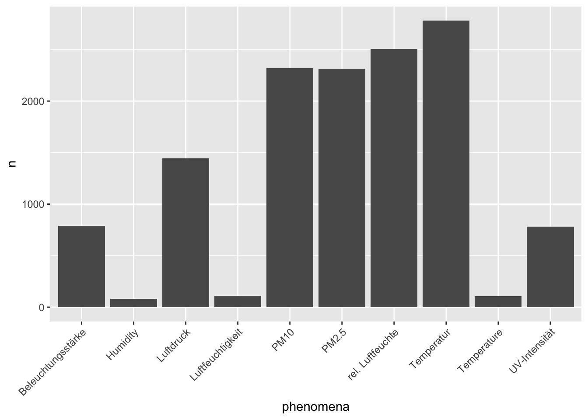
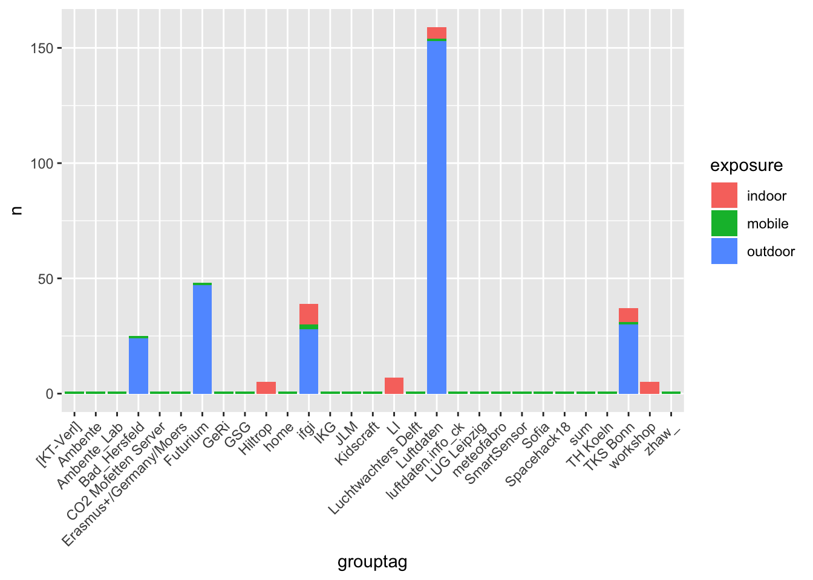

Motivation
The senseBox is a do-it-yourself kit for stationary and mobile sensor stations. With senseBox you can make measurements, helping to answer a variety of scientific questions and to support Citizen Science Projects from the local to global scale. Data collected by senseBox can increase the measured density of various enviromental factors and can contribute to more precise statements regarding climate, pollution or traffic.
openSenseMap is the platform for the publishing of senseBox and other open sensor data. Each senseBox transmits its measurements directly to the map, where anyone can observe, analyze and download the data.
This is the point where this R-pacakge comes into play: The R-package senseBox provides access to the senseBox API and enables the user to download, analyse and visualise the data provided by registered senseBoxes.
With pacakges like ggplot2 or plotly R is the perfect tool to visualise data. In the next chapter you find a short introduction to the basic usage of this R-package and some examples how to visualise the data.
Installation
if(!require("devtools"))
install.packages("devtools")
devtools::install_github("JohannesFriedrich/senseBox")Usage
Get some information about the senseBox project and list all senseBoxIds
library(senseBox)
## Loading required package: httr
stats <- get_senseBox_stats()| variable | value |
|---|---|
| Number of senseBoxes | 8615 |
| Number of Measurements | 9775509322 |
| Number of measurements in last minute | 5873 |
With the function get_senseBox_Ids() you obtain all available senseBox Ids and the name of the station.
Id_list <- get_senseBox_Ids()| senseBoxId | name |
|---|---|
| 5386026e5f08822009b8b60d | CALIMERO |
| 538ee6a4a83415541576b777 | SenGIS Arbeitsgruppe - Uni Hohenheim |
| 5391be52a8341554157792e6 | LeKa Berlin |
| 539c00c2a83415541578eaf5 | IV Gummersbach |
| 539fec94a8341554157931d7 | The PaderWarrior Reloded |
| 53a0017aa834155415793281 | Alt-Lietzow |
You are just interested in senseBoxes, which collect data from “indoor”? So use the function search_senseBox().
indoor <- search_senseBox(exposure = "indoor")| senseBoxId | exposure | name | createdAt | model | phenomena | unit | sensorIds | sensorType | long | lat | grouptag | updatedAt | weblink | lastMeasurementAt | description | height |
|---|---|---|---|---|---|---|---|---|---|---|---|---|---|---|---|---|
| 54d79ea81b93e970075153f4 | indoor | Aasee-Station | 2015-02-08 17:36:40 | custom | UV , Beleuchtungsstärke, Luftdruck , rel. Luftfeuchte , Temperatur | UV-Index, lx , Pa , % , °C | 54d79ea81b93e970075153f6, 54d79ea81b93e970075153f7, 54d79ea81b93e970075153f8, 54d79ea81b93e970075153f9, 54d79ea81b93e970075153fa | GUVA-S12D, TSL2561 , BMP085 , DHT11 , DHT11 | 7.604985 | 51.94647 | NA | NA | NA | NA | NA | NA |
| 54e73244a807ade00f85f5bd | indoor | PhotonicNet | 2015-02-20 13:10:28 | custom | UV , Beleuchtungsstärke, Luftdruck , rel. Luftfeuchte , Temperatur | UV-Index, lx , Pa , % , °C | 54e73244a807ade00f85f5bf, 54e73244a807ade00f85f5c0, 54e73244a807ade00f85f5c1, 54e73244a807ade00f85f5c2, 54e73244a807ade00f85f5c3 | GUVA-S12D, TSL2561 , BMP085 , DHT11 , DHT11 | 9.635454 | 52.41255 | NA | NA | NA | NA | NA | NA |
| 54e7a5faa807ade00f868aab | indoor | fablab potsdam | 2016-08-28 16:54:36 | custom | UV , Beleuchtungsstärke, Luftdruck , rel. Luftfeuchte , Temperatur | UV-Index, lx , Pa , % , °C | 54e7a5faa807ade00f868aad, 54e7a5faa807ade00f868aae, 54e7a5faa807ade00f868aaf, 54e7a5faa807ade00f868ab0, 54e7a5faa807ade00f868ab1 | GUVA-S12D, TSL2561 , BMP085 , DHT11 , DHT11 | 13.080662 | 52.39649 | MakeLight | 2016-12-17 14:55:05 | NA | NA | NA | NA |
We chose one ID for the following examples
senseBoxId <- "592ca4b851d3460011ea2635"Show location of senseBox
location <- get_senseBox_location(senseBoxId)
library(leaflet)
library(htmltools)
leaflet(location) %>%
addProviderTiles(providers$OpenStreetMap) %>%
addTiles() %>%
addMarkers(~long, ~lat, popup = ~htmltools::htmlEscape(name))Sensor Id information
Get some information about the senseBox sensors
sensor_info <- get_senseBox_sensor_info(senseBoxId)| name | phenomena | unit | sensorIds | sensorType |
|---|---|---|---|---|
| Leipziger65-Süd | PM10 , PM2.5 , Temperatur , rel. Luftfeuchte | µg/m³, µg/m³, °C , % | 592ca4b851d3460011ea2636, 592ca4b851d3460011ea2637, 592ca4b851d3460011ea2638, 592ca4b851d3460011ea2639 | SDS 011, SDS 011, DHT22 , DHT22 |
With the argument tidy = TRUE a tidy data.frame will be produced:
sensor_info <- get_senseBox_sensor_info(senseBoxId, tidy = TRUE)| name | phenomena | unit | sensorIds | sensorType |
|---|---|---|---|---|
| Leipziger65-Süd | PM10 | µg/m³ | 592ca4b851d3460011ea2636 | SDS 011 |
| Leipziger65-Süd | PM2.5 | µg/m³ | 592ca4b851d3460011ea2637 | SDS 011 |
| Leipziger65-Süd | Temperatur | °C | 592ca4b851d3460011ea2638 | DHT22 |
| Leipziger65-Süd | rel. Luftfeuchte | % | 592ca4b851d3460011ea2639 | DHT22 |
Download senseBox data
We can now download data from the senseBox, either from a specific sensorId or from all sensors within the sensBox. In the following we are downloading all available sensors.
data_all <- get_senseBox_data(senseBoxId)When you are interested in just a selection of sensors, just submit the sensorIds to the function get_senseBox_data().
sensor_ids <- get_senseBox_sensor_Ids(senseBoxId)
data_sel <- get_senseBox_data(senseBoxId,
sensorId = sensor_ids$sensorIds[1:2])When using the above code, by default, the data from the last 48 h will be downloaded. You can donwload up to 10,000 records and sepcify the date of the record. The maximum time frame for downloading data is back to one month from now. Use the argument fromDate and toDate to specify the desired time frame. Note that in contrast to the code above, all sensors from the senseBox are requested (by default) because argument sensorId is not set.
data_timeframe <- get_senseBox_data(senseBoxId,
fromDate = "2017-11-11 11:11:11",
toDate = "2017-11-12 11:11:11")Visualising the results from all sensors is one of the main aims and we recommend using the R-package ggplot2. We provide a sample code next and you just have to change the data executed in the function melt().
library(ggplot2)
library(reshape2)
library(scales)
data_melt <- melt(data_timeframe, id.vars = c("createdAt", "value"))
ggplot(data_melt, aes(x = createdAt, y = value, colour = L2)) +
geom_line() +
scale_x_datetime(labels = date_format("%H:%M", tz = Sys.timezone())) +
facet_wrap(~L2, scales = "free") +
theme(legend.position = "bottom",
legend.title = element_blank())
Download archived data
Receiving data with get_senseBox_data() is limited to 10.000 data points. But every day all measured sensor data are stored in the senseBox archive. With the function get_senseBox_archive() the zip file from a specific senseBox for a date can be downloaded. You have to unzip the folder by yourself and every sensor data is stored in a csv file.
get_senseBox_archive(senseBoxId,
date = "2018-07-31")Some senseBox statistics
infos <- get_senseBox_info(Id_list$senseBoxId, parallel = TRUE)
infos %>%
select(name, phenomena) %>%
unnest() %>%
count(phenomena) %>%
arrange(desc(n)) %>%
top_n(10, n) %>%
ggplot() +
geom_histogram(aes(x = phenomena, y = n), stat = "identity") +
theme(axis.text.x = element_text(angle = 45, hjust = 1))
## Warning: `cols` is now required when using unnest().
## Please use `cols = c(phenomena)`
## Warning: Ignoring unknown parameters: binwidth, bins, pad
infos %>%
group_by(exposure, grouptag) %>%
summarise(n = n()) %>%
arrange(desc(n)) %>%
na.omit() %>%
top_n(5, n) %>%
ggplot() +
geom_bar(aes(x = grouptag, y = n, fill = exposure), stat = "identity") +
theme(axis.text.x = element_text(angle = 45, hjust = 1))
## `summarise()` has grouped output by 'exposure'. You can override using the `.groups` argument.
infos %>%
mutate(year = year(createdAt),
month = month(createdAt),
day = day(createdAt)) %>%
group_by(year, exposure) %>%
summarise(n = n()) %>%
arrange(desc(year)) %>%
ggplot() +
geom_bar(aes(x = year, y = n, fill = exposure), stat = "identity")
## `summarise()` has grouped output by 'year'. You can override using the `.groups` argument.
Available senseBoxes
This site offers a list of all available senseBoxes (27-01-2020). You can search for any keyword you are interested in.